Ubuntu Server 配置
01. Ubuntu16.04.2-Server-amd64
- Repo Point
ubuntu-16.04.2-server-amd64.isoTips最新的版本已到19.01
02. 环境配置
1. Ubuntu16.04.2-Server-amd64
服务器BOIS启动
1 | # F2、F12或 Del 进BOIS |
2. LVM
Tips https://help.ubuntu.com/lts/serverguide/advanced-installation.html
下面是官方文档步骤，建议使用LVM配置除了/boot外的所有挂载，便于后续LVM扩容.
- Follow the installation steps until you get to the Partition disks step, then: At the “Partition Disks screen choose “Manual”.
- 选择分区手动配置.
- Select the hard disk and on the next screen choose “yes” to “Create a new empty partition table on this device”.
- 选择在磁盘上创建新的分区.
- Next, create standard /boot, swap, and / partitions with whichever filesystem you prefer.
- 先手动建立
/boot分区，剩余所有大小全部配置为LVM逻辑卷.
- For the LVM /srv, create a new Logical partition. Then change “Use as” to “physical volume for LVM” then “Done setting up the partition”.
- LVM内按照自己的需求进行生成和挂载，选择 “physical volume for LVM”.
- Now select “Configure the Logical Volume Manager” at the top, and choose “Yes” to write the changes to disk.
- 磁盘分切完后(/boot & LVM)，进入LVM管理配置，开始配置划分后的LVM磁盘.
- For the “LVM configuration action” on the next screen, choose “Create volume group”. Enter a name for the VG such as vg01, or something more descriptive. After entering a name, select the partition configured for LVM, and choose “Continue”.
- 顺序：
PV(Free physical volumes) → VG → LV此处应该可以从配置项里看到可用的PV，选择创建命名VG(例如：vg01).
- Back at the “LVM configuration action” screen, select “Create logical volume”. Select the newly created volume group, and enter a name for the new LV, for example srv since that is the intended mount point. Then choose a size, which may be the full partition because it can always be extended later. Choose “Finish” and you should be back at the main “Partition Disks” screen.
- 根据自己的需求，将创建好的VG分切至各个LV，并取名(例如：swap、root).
- Now add a filesystem to the new LVM. Select the partition under “LVM VG vg01, LV srv”, or whatever name you have chosen, the choose Use as. Setup a file system as normal selecting /srv as the mount point. Once done, select “Done setting up the partition”.
- 到这里，LVM已按照需求划分为不同分区，现在要做的就是挂载到对应的目录下，按照先前的命名，一一对应挂载.
- Finally, select “Finish partitioning and write changes to disk”. Then confirm the changes and continue with the rest of the installation.
- Finish.
具体磁盘配置步骤
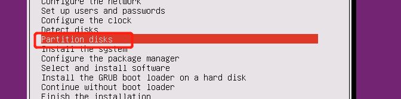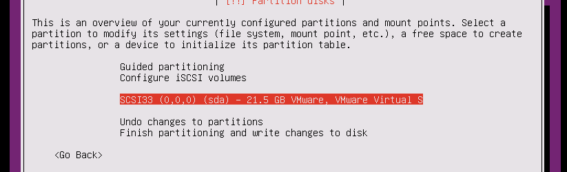
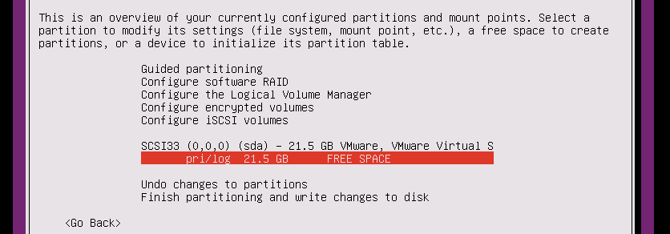
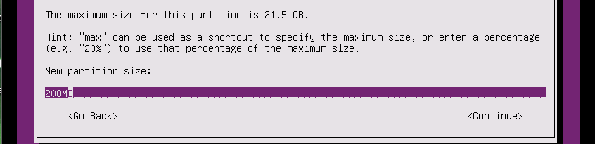
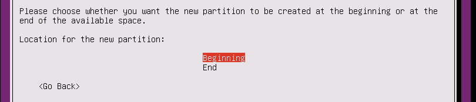
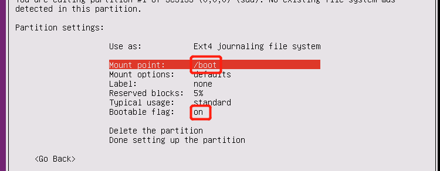
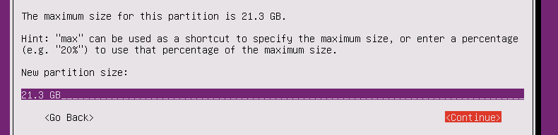
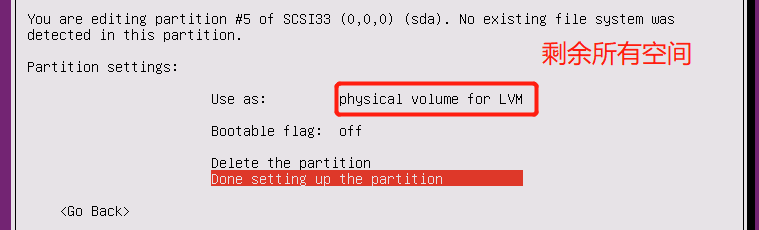
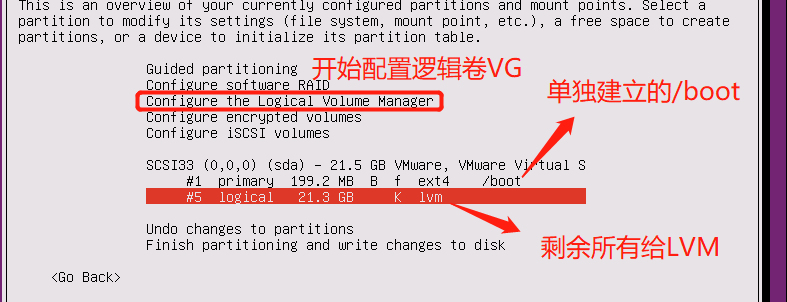
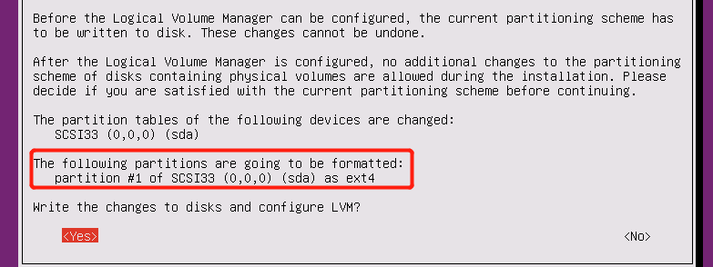
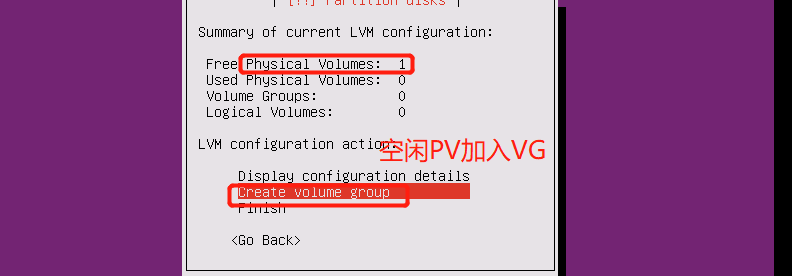
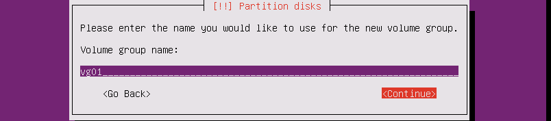
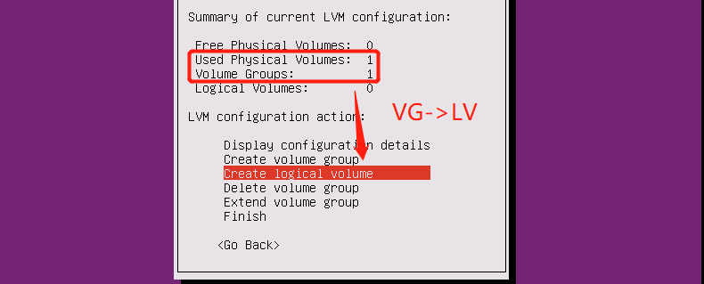
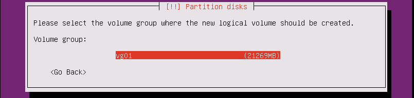
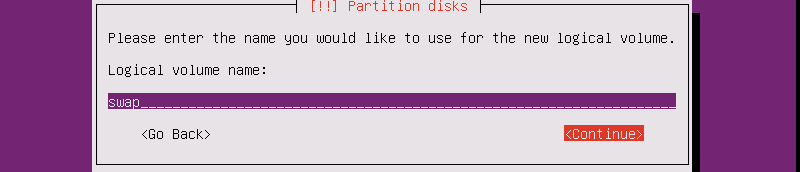
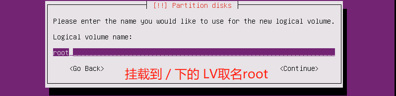
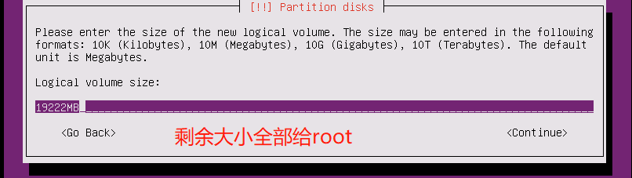
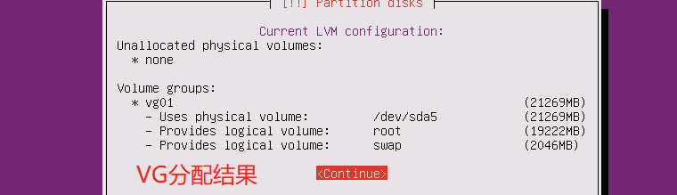
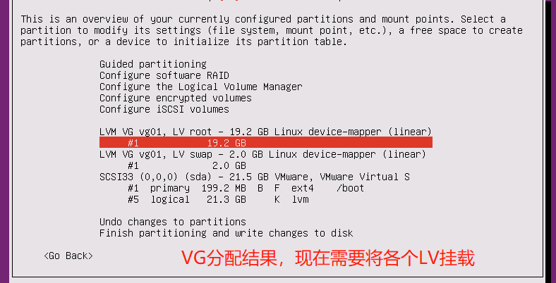
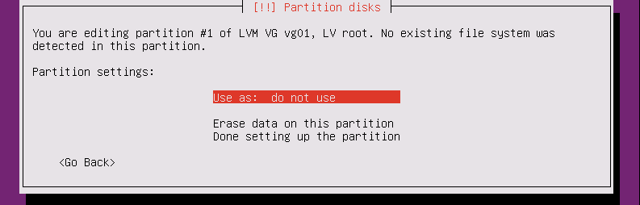
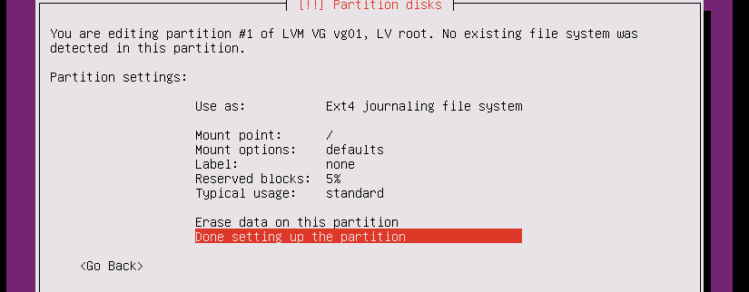
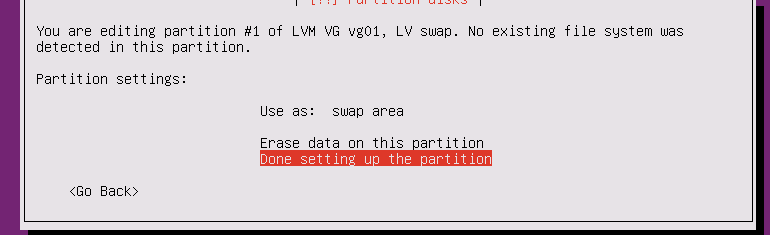
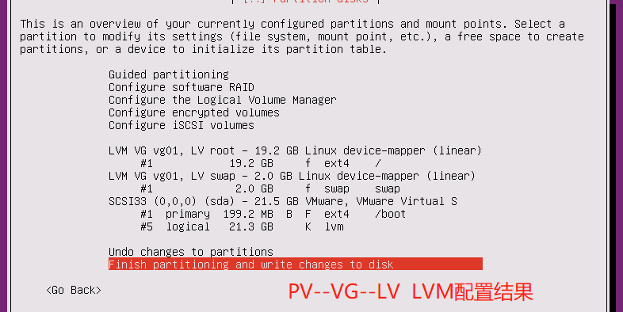
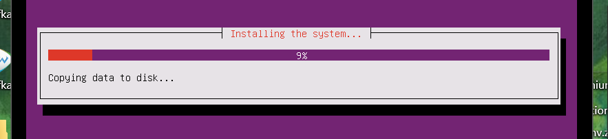
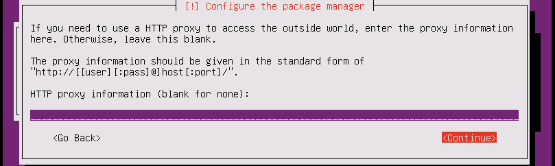
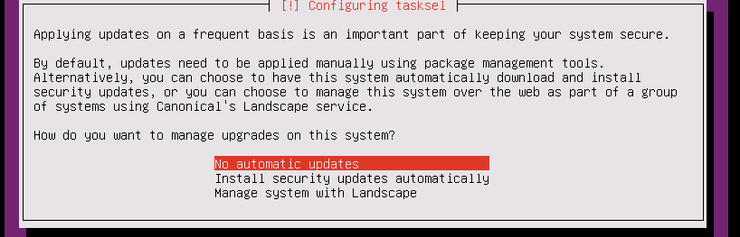
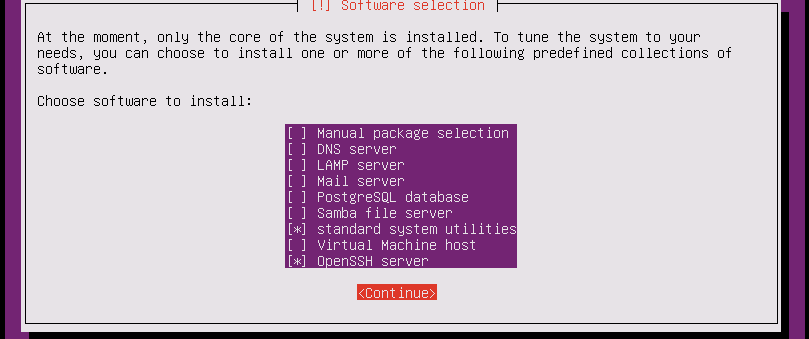
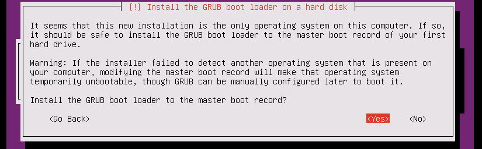
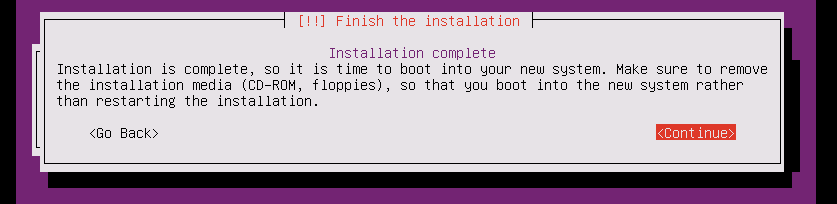
安装过程完成后会自动reboot.
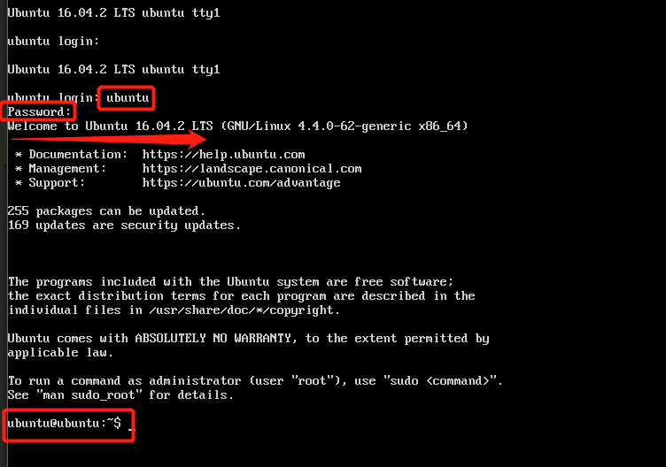3. 静态IP
配置root用户
1 | # 配置静态IP |
4.上述配置正确，此时就可以用客户端进行连接
5. root用户激活
Tips 这一步可以放在第3步执行
1 | ubuntu@ubuntu:~$ sudo passwd root |